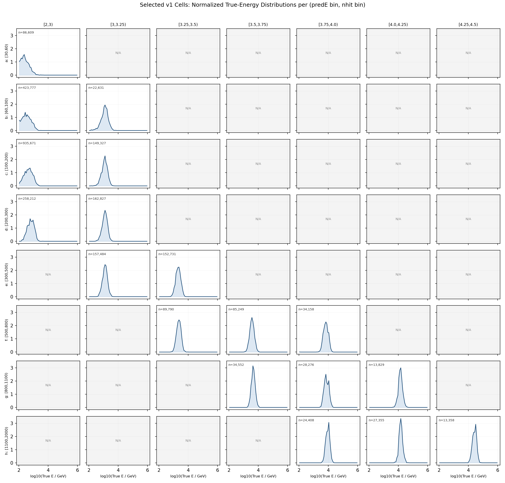

Crab SED Roadmap
目标。 在 WCDA 两个月（2022-01-01 至 2022-02-28）Crab 观测数据上复现 Crab Nebula 的 SED，用以验证基于 ParticleNet 的单事例能量重建。分箱方案在标准 WCDA forward folding 之上扩展为 (Nhit, log₁₀ E_pred) 二维网格。
参考：胡世聪博士论文 LHAASO-WCDA 伽马源分析与源表（2023），第 6 章 + GRB 221009A 附录。
1. 为什么用二维分箱而不是只用 Nhit
WCDA 传统流水线（胡 2023, §6.2）只沿一个轴 Nq05t30 分箱，把假设的源能谱通过探测器响应 η(θ, E) 前向折叠成每个 Nhit 段的预期事例数。它不直接按重建能量分箱，根本原因是只靠水池重建出来的单事例能量分辨率太差，没有实际价值。
现在 ML 回归器（runs/theta_recoxy_position_embed_midenergy_8666）给出每个事例一个 log10(E_pred / GeV)，它的分辨率足够好，可以作为有用的第二条分箱轴。把它作为第二维度加进去做了两件事：
- 在固定的 Nhit 段内，按 log E_pred 再切一刀，把原本混在一起、真能量不同的事例分开。这让响应矩阵更"陡"，给拟合提供了额外的谱形信息。
- Nhit 轴依然保留，因此分析仍然能直接和已发表的 WCDA 一期星表结果（胡 2023, 图 6-32）对比 — 把二维响应沿 log E_pred 轴 marginalise 回去就能恢复一维 Nhit-only 拟合。
这种思路结构上和 IACT 把"重建能量"和"重建 gamma/hadron 判别值"分别作为独立分箱轴是一样的：第二条轴允许有噪声，响应矩阵会把它处理掉。
二维网格已经在 apply/simulation_all_bin.py 里做过原型，输出在 apply/summary_selectedcuts/bin_counts.md：
- Nhit 分箱（8 段）：
[30,60), [60,100), [100,200), [200,300), [300,500), [500,800), [800,1100), [1100,2000) - log₁₀ E_pred 分箱（11 段）：
<2, [2,3), [3,3.25), [3.25,3.5), [3.5,3.75), [3.75,4.0), [4.0,4.25), [4.25,4.5), [4.5,4.75), [4.75,5.0), >=5 - 88 个正式内部单元里有 60 个标为
acceptable（cut 后 MC 事例数 ≥ ~1000），它们作为候选池。v1 拟合进一步收束到apply/config/cell_selection_v1.csv里的 18 个 physical-band 单元，避免过多低贡献格点拖大 χ² 自由度。
观测端的 Nhit 用 ROOT 文件里的 nv 分支（和 simulation_all_bin.py:get_nhit_value 用的代理变量一致）。
v1 cell 选择依据
18 个 v1 单元不是按单一 count 阈值机械截出来的，而是从 60 个 acceptable 候选单元里手动收束出的 baseline physical band。选择规则记录在 apply/config/cell_selection_v1.csv 的 selection_reason 列里，核心依据是：
- 先保留 formal Nhit 范围。 v1 只在
[30,2000)的 8 个正式 Nhit bin 内选单元。<30和>=2000作为 overflow/out-of-range 诊断，不进 baseline。已有 MC 统计里>=2000共有 20,599 个 cut 后事例，只占 formal[30,2000)的 0.61%；加入会多出 5 个 acceptable cell，但对 v1 统计增益不到 1%，反而增加最高能端响应和背景的不稳定性。 - 每个 Nhit 行至少保留一个主带单元。 这样响应矩阵覆盖完整的 Nhit 动态范围，不会让某一段 shower size 在拟合中完全缺席。
- 沿高 Nhit ↔ 高
log₁₀ E_pred的 physical ridge 取点。 低 Nhit 行选低logE_pred，高 Nhit 行逐步右移到高logE_pred。这避免把低 Nhit/高预测能量或高 Nhit/低预测能量的长尾误分单元放进 baseline。 - 按行控制自由度。 低统计或能量分布重叠严重的行只取 top-1/top-2；高 Nhit 端为了保留高能 shoulder 取 top-3。最终 18 个 cell 比 60 个候选 cell 更适合 v1 χ² 拟合，避免自由度被低贡献格点撑大。
- MC 统计仍然充足。 18 个 cell 合计 cut 后 MC 事例数为 2,700,244，占 formal
[30,2000)统计的约 79.5%。也就是说，v1 删除了大量边缘 cell，但保留了主物理带的大部分 MC 统计。
v1 的 18 个拟合单元为：
| Nhit bin | log₁₀ E_pred bins |
|---|---|
[30,60) |
[2,3) |
[60,100) |
[2,3), [3,3.25) |
[100,200) |
[2,3), [3,3.25) |
[200,300) |
[2,3), [3,3.25) |
[300,500) |
[3,3.25), [3.25,3.5) |
[500,800) |
[3.25,3.5), [3.5,3.75), [3.75,4.0) |
[800,1100) |
[3.5,3.75), [3.75,4.0), [4.0,4.25) |
[1100,2000) |
[3.75,4.0), [4.0,4.25), [4.25,4.5) |
下图把这 18 个 v1 单元放回原来的二维网格中。每个非灰色小面板显示对应 (Nhit, log₁₀ E_pred) 单元内 MC 真实能量 log₁₀(E_true / GeV) 的归一化分布，面板左上角的 n 是 bin_counts.csv 中该单元的 cut 后 MC 事例数。灰色 N/A 面板是 60 个 acceptable 候选池里没有进入 v1 拟合的单元。可以看到 v1 基本沿着高 Nhit ↔ 高预测能量的 physical band 取点，同时保留了最高 Nhit 端。

2. 现有原料
| 资源 | 路径 | 用途 |
|---|---|---|
| 观测 eval ROOT | /mnt/mydisk/WCDA_observation_eval/<MMDD>/Esg*.root |
逐事例 ml_logE_pred, nv, theta, dcedge, xc, yc, pincness, fitstat, irun/ies/iseq/ievent |
| 时间恢复 friend tree | /mnt/mydisk/WCDA_observation_eval/recovered_time/<MMDD>/*.time.root |
mjd, ra_mean_deg, dec_mean_deg, match_status |
| 训好的模型 | runs/theta_recoxy_position_embed_midenergy_8666 |
和 eval ROOT 用的是同一个 checkpoint |
| MC 模拟 | /home/server/mydisk/WCDA_simulation + 模型预测 |
构建 A_eff 和迁移矩阵 |
| 二维分箱定义 | apply/simulation_all_bin.py |
权威网格 |
| 每个单元的统计量 | apply/summary_selectedcuts/bin_counts.md |
决定 60 个 acceptable 候选单元 |
| v1 拟合单元 | apply/config/cell_selection_v1.csv |
18 个进入响应、观测规约和 χ² 拟合的单元 |
两个月 live time 预估 Crab 显著性 ~270σ × √(59 / 508) ≈ 92σ — 做方法验证 SED 完全够。
3. Forward folding 形式（推广到二维）
设 b = (i_N, i_E) 是二维单元的索引，i_N 是 Nhit 段编号，i_E 是 log E_pred 段编号。源的微分能谱 I(E; Θ_S)（参数为 Θ_S）下，单元 b 内的预期信号数为：
$$ N_b^{\text{exp}}(\Theta_S) \;=\; \iint I(E;\Theta_S)\,\cos\theta\,\eta_b(\theta, E)\,S_0\,T_0\,f(\theta)\,d\theta\,dE $$
其中：
η_b(θ, E_true) = (通过所有 cut 后落入单元 b 的加权事例数) / (投放 primary 的加权事例数)，即二维探测器响应，从 MC 在和观测严格一致的 cut 条件下计算得到。S_0 = 4.0e6 m²是模拟中的投点面积，来自上游t_evth.v[48] injectionArea = 4.0e10 cm²。注意这里的单位是 cm²，不是 mm²；coreX_WL/coreY_WL除以 100 后对应 eventout 的mc_xc/mc_yc米坐标，几何是约[-1000,1000] m × [-1000,1000] m的方形投点区。f(θ)是源在观测窗口内归一化的天顶角分布。T_0是 live time。
形式上和胡 2023 公式 (6-6) 完全一样，唯一改的是 η_b 由 Nhit 段单一编号变成了 (Nhit, log E_pred) 二维单元编号。
一维 Nhit-only 的 forward folding 通过 η_{i_N}(θ, E) = Σ_{i_E} η_{(i_N, i_E)}(θ, E) 直接恢复。
4. 流水线
┌─────────────────────────────────────────────────────────┐
│ Stage A — 二维网格上的探测器响应（MC） │
└─────────────────────────────────────────────────────────┘
│
▼
┌─────────────────────────────────────────────────────────┐
│ Stage B — Crab 赤纬带上、各单元的 PSF 表（MC） │
└─────────────────────────────────────────────────────────┘
│
▼
┌─────────────────────────────────────────────────────────┐
│ Stage C — 观测数据规约：事例选择、时间、RA/Dec │
└─────────────────────────────────────────────────────────┘
│
▼
┌─────────────────────────────────────────────────────────┐
│ Stage D — 背景估计（先判定 ROI 覆盖，再选背景口径） │
└─────────────────────────────────────────────────────────┘
│
▼
┌─────────────────────────────────────────────────────────┐
│ Stage E — 各单元 N_on, B_on/αN_off, excess, σ │
└─────────────────────────────────────────────────────────┘
│
▼
┌─────────────────────────────────────────────────────────┐
│ Stage F — Forward folding χ² 拟合（先 PL，再 LogPar） │
└─────────────────────────────────────────────────────────┘
│
▼
┌─────────────────────────────────────────────────────────┐
│ Stage G — SED 点 + 与 WCDA-1 / HAWC / HESS 对比 │
└─────────────────────────────────────────────────────────┘
Stage A — 二维网格上的探测器响应
- 用和 eval ROOT 同一个 checkpoint对全 MC 样本（不仅是 test split）跑一遍 inference，导出每个事例的
(E_true, θ_true, nv, log10 E_pred, passed_cuts)。apply/simulation_all_bin.py已经做了重活，需要扩一下让它同时保留E_true和θ_true。 - 事例 cut 必须和 Stage C 观测端完全一致：
pincness < 1.1、fitstat == 0、θ < 50°、dcedge > 20 m，以及模型config.json里训练时用的其它条件。 - 对每个单元 b = (i_N, i_E) 和每个 (log₁₀ E_true, θ_true) 网格（Δlog₁₀ E = 0.1, Δθ = 1°，和胡 2023 一致）：
η_b(θ_k, E_j) = N_pass(b, E_j, θ_k) / N_thrown(E_j, θ_k)- 需要有效面积时再乘上
S_0。
- 这里的
b是观测空间里的二维单元b = (Nhit bin, log₁₀ E_pred bin)；E_j和θ_k是 MC 真值空间里的条件。也就是说，η_b(E_true, θ)表示：一个真实能量为E_true、天顶角为θ的 gamma，经过探测器、cuts、AI 能量预测和二维分箱以后，最后落进观测单元b = (Nhit, E_pred)的概率。 - 现有数据上的计算逻辑：
- 分子
N_pass(b, E_j, θ_k)从/mnt/mydisk/WCDA_simulation_binned_response_v1/nhit_*/predE_*/*.root来数。每个文件已经按nv × ml_logE_pred落进某个观测 cell，并保留mc_energy、mc_theta、mc_weight；只需按log₁₀(mc_energy)和mc_theta再填二维真值直方图。 - 分母
N_thrown(E_j, θ_k)从 IHEP 原始 MC primary hist 汇总文件/mnt/mydisk/WCDA_simulation_primary_hist/primary_denominator_stage_a.npz来数；正式响应使用hntotmcweighted thrown sumw，hntotmc0unweighted count 只作为诊断。 - 分子和正式分母都用
Σ mc_weight/ weighted primary sumw，避免裸 count 与生成谱权重混用。 - 绝对有效面积同步输出：
A_eff,b(E,θ) = S_0 cosθ_center η_b(E,θ)，其中S_0 = 4.0e6 m²，θ_center为 1° 天顶角 bin 中心。旧口径把4.0e10 cm²误读成4.0e10 mm² = 40000 m²，会把绝对有效面积压低 100 倍。
- 分子
- 输出
response_2d.npz，shape 为(N_cells, N_E_true, N_theta)，η 和 A_eff 都存。默认只保留apply/config/cell_selection_v1.csv中的 18 个 v1 单元；60 个acceptable单元只作为候选池和敏感性检查输入。
Stage B — Crab 赤纬带上各单元的 PSF
- Crab 赤纬 = 22.01°，LHAASO 纬度 = 29.45° → θ_min ≈ 7.4°。先只在 Crab 这条赤纬带上建 PSF 表。
- 对每个单元 b，用 Crab 在观测窗口内的天顶角分布
f_Crab(θ)给 MC 事例加权，对径向偏差（reco − true）做单高斯拟合得到 σ_b。双高斯先不做，单高斯足够 v1 用。 - 积分半径用胡 2023 的最优值 Δθ_opt ≈ 1.58 σ_b，逐单元算。各单元的 containment fraction 一并存下来。
Stage C — 观测数据规约
每个 Esg*.root + friend .time.root：
- 保留
match_status == 0、pincness < 1.1、fitstat == 0、theta < 50°、dcedge > 20 m的事例。 - 从
nv和ml_logE_pred算出单元b = (i_N, i_E)。不在apply/config/cell_selection_v1.csv里的单元直接丢弃。 - 每个事例携带
(ra_mean_deg, dec_mean_deg, mjd, theta, b)往下传。 - Stage C metadata 必须记录天区覆盖诊断：以 Crab 为中心的 offset 半径
ρ = sqrt(x² + y²)分布、按 cell 的ρprofile、以及是否存在明显边缘截断。apply/report/crab_v1_cell_skymaps.md的 10° half-width quicklook 显示 Crab 周围覆盖可能只有约 8° 量级，但这只是从天图肉眼读出的假设，不应在 Stage D 前当成定论。
输出按月汇成单一 parquet obs_events.parquet（列存；~100M 事例 × ~6 列在磁盘和扫描速度上都很舒服）。每月一个文件，方便管理。
Live time 从 MJD 覆盖减掉 duty-cycle 空档算出。Handoff 给出 1258 个输入文件、共 127.69M 事例匹配成功 — 这是 live time 计数的母体。
Stage D — 背景估计
Stage D 的第一步不是直接套背景公式，而是先判定 Stage C 输入到底是什么天区口径。直接积分法要求输入近似为全视场、全天候的事件流；如果输入实际上只覆盖 Crab 周围局部 ROI，那么用它重建全天接收度 G_b(x, y) 会把 ROI 边界和源区选择误当成探测器接收度，背景会失真。当前 crab_v1_cell_skymaps.md 的 10° quicklook 提示有效覆盖可能在 Crab 附近约 8°，但这个半径需要由 Stage D 的 coverage 诊断定量确认。
因此 Stage D 分成两个互斥口径：
- 全视场输入口径。 只有当 Stage C 被确认是全视场事件流时，才使用直接积分法（胡 2023, §6.1.5）。按 cell 独立在本地坐标或 hour-angle/declination 空间中重建
G_b(x, y)，mask Crab、Mrk 421、Mrk 501、Geminga、Cygnus 等强源，记录全天R_b(t)，再沿 Crab 轨迹积分得到B_on,b。这一路线必须输出 masked/unmasked 接收度、rate vs time、Crab 轨迹覆盖、mask 配置、live time 和B_on,b。 - Crab 局部 ROI 口径。 如果 Stage C 只覆盖 Crab 附近局部天区，则 v1 baseline 改为 ROI-local 背景，不再把直接积分法作为主背景。先把事件投影到 Crab tangent-plane：
x = wrap(ra_mean_deg - RA_Crab) cos(Dec_Crab)，y = dec_mean_deg - Dec_Crab，ρ = sqrt(x² + y²)。 由 coverage 诊断确认外边界后，默认采用内切 fiducial ROIρ < 6°，以避开疑似 8° 覆盖边缘；6° < ρ < 8°只作为覆盖和边缘系统诊断，不进入 baseline on/off 统计。
ROI-local baseline 的具体要求：
- 输入仍按 18 个 v1 cell 独立处理。不同 cell 的 PSF、能量分布和背景梯度不同，不能共用一个归一化。
- Crab 源区 mask 至少取 2°；更严格时取
max(2°, 2 r_b)做稳定性检查。源区 mask 只用于训练/估计背景，不影响 Stage E 的 on-region 计数。 - 背景优先用等赤纬 sideband 或 ring/annulus 方法在
ρ < 6°内估计。等赤纬 sideband 要沿ystrip 建背景，排除 Crab mask，并避免使用靠近ρ=6°的边缘像素；ring 方法要显式做 ROI 几何面积修正。 - 输出
B_on,b。如果背景来自实际 off 区计数，则同时输出N_off,b和alpha_b，Stage E 可用 Li-Ma；如果背景来自平滑密度图或模型积分，则 metadata 必须明确标注为 direct expectation，Li-Ma 不适用，只输出 known-background diagnostic。 - 诊断至少包括：per-cell
ρcoverage profile、ρ<6°与外圈6°<ρ<8°的对照、源区 mask 图、sideband/ring off 区图、N_on/B_on表、以及 fiducial 半径从 5.5°、6.0°、6.5° 变化时的稳定性。
Stage E — 信号提取
对每个单元 b：
- 积分半径
r_b = 1.58 σ_b，来自 Stage B。 N_on,b= Crab on-region（圆心 RA=83.63°, Dec=22.01°，半径 r_b）落在单元 b 的事例数。若 Stage D 判定为 Crab 局部 ROI 口径，Stage E 必须只使用同一个 fiducial ROI 配置（默认ρ < 6°）和同一套 mask/edge 定义。- 背景输入来自 Stage D：可能是
B_on,b直接期望，也可能是α_b N_off,b。Stage E 不能自行把 direct expectation 强行解释成传统 off 计数。 - 若有真实 off 计数，计算
excess_b = N_on,b − α_b N_off,b、σ_b^stat = √(N_on,b + α_b² N_off,b)，并按胡 2023 公式 6-26 输出 Li-Ma 显著性。 - 若只有直接背景期望，计算
excess_b = N_on,b − B_on,b，显著性只标注为 known-background Poisson diagnostic；alpha_b、N_off,b和 Li-Ma 必须留空或标注not_applicable。
诊断产出预期：
- 二维显著性图（Nhit × log E_pred）— 应该看到一条正相关的对角带（高 Nhit ↔ 高 log E_pred），偏离对角线的"翼"告诉你 ML 这条轴在 Nhit 之外加了多少信息。
- v1 18 个拟合单元加起来的 Crab 总显著性；同时输出 60 个 acceptable 候选单元的总显著性作为诊断对照。
- 如果 Stage E 显著性远超两个月 Crab 的量级预期，先检查 Stage C ROI 口径、fiducial 半径、off 区几何和边缘修正，不允许直接 promote 到 Stage F。
Stage F — Forward folding 拟合
这里的 N_b^{exp} 不是按 E_pred 反推真实能量，而是把假设的真实 Crab 能谱 I(E; Θ_S) 通过 Stage A 的 η_b(E_true, θ) 响应折叠到观测单元 b = (Nhit, E_pred) 后得到的预期信号数。
用 iminuit 最小化
$$ \chi^2(\Theta_S) \;=\; \sum_{b \in \text{v1 cells}} \frac{\big(\text{excess}_b - N_b^{\text{exp}}(\Theta_S)\big)^2}{(\sigma_b^{\text{stat}})^2} $$
其中 v1 cells 是 apply/config/cell_selection_v1.csv 中的 18 个单元。拟合输出 metadata 必须记录 cell_selection_version = v1_physical_18 和完整 cell 列表，方便和后续 selector 对照。
谱模型按顺序试：
- 幂律
I(E) = N_0 (E/E_0)^{-Γ}，E_0 = 3 TeV（和 WCDA 一期星表的 pivot 一致）。 - Log-parabola
I(E) = N_0 (E/E_0)^{-α − β log(E/E_0)}— Crab 已知有轻微弯曲。 - 带 e 指数截断的幂律（只在 (2) 残差仍有结构时上）。
胡 2023 里模拟 Crab 用的注入谱是 −2.62、10 GeV–1 PeV。可以直接用同一套响应做前向折叠 — 响应是迁移矩阵，不是假设谱 — 但好的习惯是把拟合得到的最佳谱回代一次，给 A_eff 重新加权迭代一轮。
Stage G — SED 点
当前 Stage G 先做 diagnostic SED，不作为正式发表版。S0 单位修正后，低 Nhit / 低 E_pred 的 cells 1–7 在 skymap/sideband quicklook 和 Stage F pull 上暴露出明显系统异常，其中 cells 1–3 是硬异常；正式 SED 不能直接把 cells 1–3 塞进去。临时高可信子集使用 apply/config/cell_subset_cells8to18_stageg_diag.csv，即 cells 8–18。drop1to5 只作为对照诊断：保留 cells 6–7 时 PL chi2/ndof = 82.65/11，仍然不可作为 Stage G baseline。
按胡 2023 的标准做法：
- 固定 Stage F 拟出来的全局 Γ（或 α, β）。
- 对每个 Nhit 段（或每个 i_E 段 — 两套都给）只重新拟归一化 N_0,bin，其他参数全部冻结。
- 转换为微分通量
E² dN/dE，能量取该单元中位 true 能量（用最佳谱给响应加权算出）。 - 直接对比：
- WCDA 一期 Crab（胡 2023 图 6-32）：N_0 = 2.114 × 10⁻¹² cm⁻² s⁻¹ TeV⁻¹ @ 3 TeV，Γ = 2.69 ± 0.01。
- HAWC、HESS 已发表的 Crab SED 作为外部 sanity 参考。
一维 Nhit-only 的 SED 作为副产物：把响应沿 i_E marginalise，重新拟一遍 — 这是和星表 apples-to-apples 的直接对比。
5. 系统检验
下面五项作为独立 sanity 产出运行，每项有独立图表，不要只在总结里随手提一句：
- 1D vs 2D 自洽性。 把二维响应 marginalise 回一维 Nhit-only 拟合，两条 SED 应该在统计误差以内一致。差太多说明二维 η 矩阵在某处归一化错了。
- 响应自检。 把模拟注入谱（Γ = −2.62）通过响应前向折叠，得到的各单元预期数应该和
bin_counts.md里 cut 后实测 MC 数符合到 ≲ 1%。 - Cell-drop 灵敏度。 默认拟合用
v1_physical_18。对照重跑top2_per_nhit_15和count_ge30000_19两套 selector；Crab 的 Γ 和 N_0 漂移应小于统计误差，且高 Nhit 端残差不能出现系统偏移。 - Cut 灵敏度。 收紧到
pincness < 0.9重跑全套（响应和观测必须用同一个更紧的 cut）。拟出的 SED 应该在统计上一致。 - ROI 覆盖和边缘灵敏度。 先确认 Stage C 是否只覆盖 Crab 局部 ROI。若走 ROI-local 背景，分别用
ρ < 5.5°、ρ < 6.0°、ρ < 6.5°的 fiducial 区域重跑 Stage D/E，Crab 的 excess 和拟合谱不能对边缘半径产生不可解释的漂移。 - 背景方法灵敏度。 ROI-local baseline 至少比较等赤纬 sideband 与 ring/annulus 两种背景；只有在确认 Stage C 是全视场事件流时，才把直接积分法加入背景系统对照。
最终系统误差预算按胡 2023 §6.8.1 思路给：ML 结果相对 WCDA 一期星表的 ratio band，理想情况下 1–20 TeV 偏差应在 ±10% 以内。
6. 交付物
| 文件 | 内容 |
|---|---|
apply/stages/01_build_response.py |
Stage A — 扩 apply/simulation_all_bin.py 输出 η、A_eff |
apply/stages/02_build_psf.py |
Stage B — Crab 赤纬带上各单元 PSF |
apply/stages/03_reduce_obs.py |
Stage C — 合并 eval ROOT + friend tree → obs_events.parquet |
apply/stages/04_background.py |
Stage D — ROI 覆盖诊断 + ROI-local 或全视场背景预测 |
apply/stages/05_signal.py |
Stage E — 各单元 N_on, B_on/αN_off, excess, σ |
apply/stages/06_fit.py |
Stage F — iminuit forward folding 拟合器 |
apply/stages/07_sed_points.py |
Stage G — 各段 SED 点 + 出图 |
apply/config/cell_selection_v1.csv |
v1 的 18 个 physical-band 拟合单元 |
apply/output/crab_sed.json |
最终拟合参数 + SED 点 |
apply/output/figures/ |
二维显著性图、SED 对比图、残差、响应切片 |
apply/report/roadmap.md |
本文档 |
每个 stage 脚本从磁盘读输入、写一个 artifact —— 不做内存里串联 —— 这样任何一步都可以独立重启。
7. v1 已定技术选择
- 背景方法：先判定输入天区口径。 如果 Stage C 是全视场事件流，v1 可使用直接积分法并和 WCDA 一期星表路线对齐；如果 Stage C 只覆盖 Crab 附近局部 ROI，v1 baseline 改为
ρ < 6°fiducial ROI-local 背景，优先使用等赤纬 sideband 或 ring/annulus，并把疑似 8° 外边缘作为系统诊断而不是拟合输入。 - Stage F 拟合后端：自写最小
iminuit拟合器。 二维响应索引、18 个 cell 的选择、metadata 和诊断输出都需要按本项目组织；直接写一个小的 forward-folding χ² 拟合器更可控。师兄星表程序可参考背景和系统误差处理，但不作为拟合主框架。 - PSF 参数化：v1 单高斯。 每个 cell 用 Crab 赤纬带的 MC 角分辨分布拟合一个 σ_b，并用
1.58 σ_b定义积分半径。双高斯留到 containment 或残差诊断显示单高斯明显不够时再升级。 - 单元选择：18 个 physical-band cell。 v1 只使用
apply/config/cell_selection_v1.csv里的 18 个单元进入响应、背景、excess 和 χ² 拟合；60 个acceptable单元保留为候选池、显著性对照和系统检查，不进入 baseline 拟合。 - Stage G 诊断子集：临时使用 cells 8–18。 在低能 sideband/background 与响应形状系统修好前，Stage G diagnostic 版本使用
cells8to18_stageg_diag。cells 1–3 不允许进入正式 SED；cells 4–7 也暂不进入 diagnostic baseline。
这五项是当前 v1 路线的固定选择，后续实现和报告 metadata 都应显式记录。尤其 Stage D/E 必须记录采用的是 full_field_direct_integration 还是 crab_roi_local，以及 fiducial ROI 半径、边缘排除策略和背景形式。